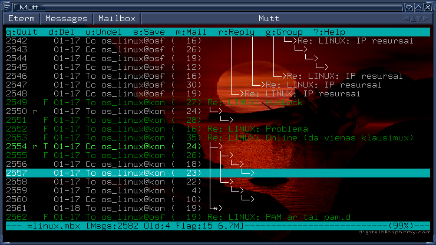
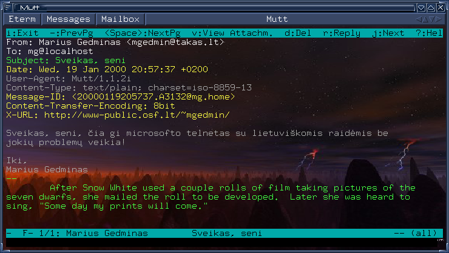

Mutt -- pati geriausia iš mano matytų pašto programų. Tiesa, mūsų skoniai gali skirtis. Mutt yra skirta ne tik Linux'ui, bet ir visai Unix operacinių sistemų šeimai ir tęsia geriausias Unix tradicijas. Viena iš šių tradicijų -- „programa turi daryti vieną darbą ir daryti jį gerai“. Mutt darbas -- ne siųsti ir gauti paštą, bet pateikti jį vartotojui. Pilnavertę Unix pašto sistemą sudaro kelios nepriklausomos programos:
Mutt dirba tekstiniame režime, tad ji yra universalesnė (pvz., galima paštą skaityti prisitelnetinus prie kito kompiuterio) ir patogesnė (čia jau kaip kam :-). Štai kaip ji atrodo:

1 pav.
Mutt laiškų sąrašas. Gražų foną bei trimačius mygtukus viršuje pateikia
Eterm terminalo programa X Window sistemai, rėmelius bei lango
mygtukus -- IceWM langų menedžeris (window manager).
Iš karto galime pastebėti kelis privalumus:

2 pav.
Mutt laiško peržiūra. Dėl rėmelių bei fono žr. paaiškinimą prie ankstesnio
pav. Vienas dalykas, kurio čia nesimato -- skirtingo lygio citatos rodomos
skirtingomis spalvomis, o www/el. pašto adresai tekste išryškinami. Visa tai,
žinoma, galima konfigūruoti.
Vienas iš malonių Mutt bruožų -- puikus el. pašto standartų palaikymas. Todėl su lietuvių kalba parašytais laiškais problemų nebūna. Beveik. :) Problemų gali iškilti, jei laiško siuntėjas pažeidžia standartus, pvz., pasiųsdamas lietuvišką laišką, parašyta naudojantis ISO-8859-13 lentele, bet antraštėje užrašydamas neteisingą kodavimo lentelę (paprastai ISO-8859-1).
Visais kitais atvejais Mutt nėra lygių. Tereikia pasiekti, kad pati sistema žinotų ISO-8859-13 lentelę (šiais laikais visos Linux distribucijos turi ją aprašantį failą /usr/share/i18n/charmaps/ kataloge), užkrauti šią lentelę atitinkantį šriftą (tai priklauso nuo konkrečios situacijos -- ar tai bus Linux konsolė, ar xterm langas, ar Microsoft Telnet programa) ir apie tai pranešti Mutt'ui komanda
:set charset=iso-8859-13
Patogiausia, žinoma, šią komandą įrašyti į .muttrc konfigūracinį failą. Tokiu atveju dvitaškio eilutės pradžioje nereikia.
Mutt 1.1 ir naujesnės versijos turi dar vieną kintamąjį -- send_charset, kuris nurodo, į kokią lentelę reikia perkoduoti išsiunčiamus laiškus (tuo atveju, kai visi simboliai laiške patenka į 7 bitų ASCII lentelę, pastaroji ir bus nurodoma, nes ji yra universaliausia ir plačiausiai palaikoma). Nuo Mutt 1.3 versijos galima kaip send_charset reikšmę nurodyti kelias koduotes, atskirtas dvitaškiais. Tuomet Mutt pasirinks pirmąją, kuria galima atvaizduoti visus jūsų laiške naudojamus simbolius. Pavyzdžiui, nurodžius
:set send_charset="us-ascii:iso-8859-1:iso-8859-13:utf-8"
laiškai be lietuviškų raidžių keliaus us-ascii arba iso-8859-1 koduote.
Pastaba dėl versijų: Mutt versiją sudaro trys skaičiai x.y.z. Versijos, kurių vidurinis skaitmuo nelyginis, yra „eksperimentinės“, skirtos tik labai drąsiems, norintiems naujausių galimybių bei nebijantiems galimų problemų vartotojams.
Jei jums iškils problemų su „Windows-1257“ lentele parašytais laiškais, pabandykite į savo .muttrc failą įrašyti štai tokią eilutę:
charset-hook windows-1257 cp1257
Beje, Mutt nuo 1.3.13 versijos gali šnekėtis su jumis ne tik angliškai, bet ir lietuviškai (arba kitomis kalbomis). Tereikia nustatyti shell kintamąjį $LANG, pvz.:
$ export LANG=lithuanian
Pastaba: dažnai žmonės prieštarauja lietuviškų raidžių vartojimui laiškuose, dėl to, kad jie skaito paštą prisijungę per telnetą prie, tarkime, universiteto serverio. Aš padariau tokį eksperimentą: iš Windows 98 kompiuterio su standartine Microsoft Telnet programa prisijungiau prie savo Linux sistemos ir pasileidęs Mutt'ą pabandžiau sau išsiųsti laišką su lietuviškomis raidėmis. Rezultatą matote antrame paveiksle viršuje. Tiesa, minėtame Windows 98 kompiuteryje buvo įdiegtas LitWin98 paketas (iš www.kada.lt/litwin/), tad gal tik su juo Telnet programa sugeba parodyti lietuviškas raides? Nors mano nuomone šis paketas turėtų būti instaliuotas kiekviename kompiuteryje -- jis yra nemokamas bei leidžia naudotis visų mėgstamu „Baltic“ (raidės vietoje skaičių) ir mano mėgstamu „Programmers“ (miręs klavišas + lotyniškos raidės) klaviatūros išdėstymais. Ačiū autoriams!
Marius Gedminas
2000 vasario 17 d.
atnaujinta 2001 gegužės 17-18 d. bei 2012 sausio 8 d.